-
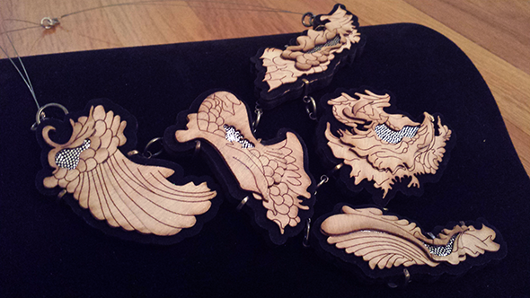
The Oak Enlaced Prong Necklace. Laser Cut and Engraved Wood Pieces with Fabric Inlay. Custom Prong Setting.
-
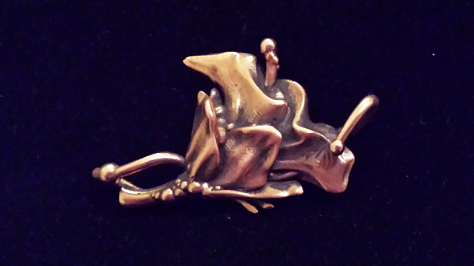
Flower Link. Lost Wax Casting: Ancient Bronze.
-
 The Face Melter. Sterling Silver Custom Prong Setting with Granules. Princess Cut Garnet.
The Face Melter. Sterling Silver Custom Prong Setting with Granules. Princess Cut Garnet. -
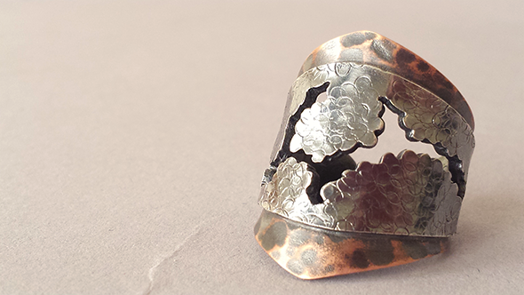
Knights Armor Wrap Ring. Stamped Sterling and Hammered Copper with Pierced Design.
-
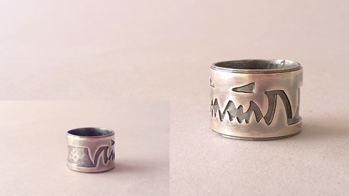
Smog Band Ring. Sterling Silver. Hammered Texture with Pierced Design.
-
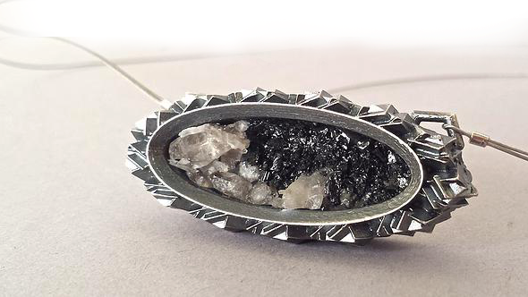
Gallant Star Pendant. Lost Wax Casting: Sterling Silver. Quartz and Black Tourmaline inlay.
-
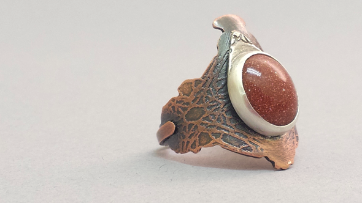
Altruistic Amber Ring: Custom Sterling Stone Setting. Pierced Design with Etched Copper Band.
-
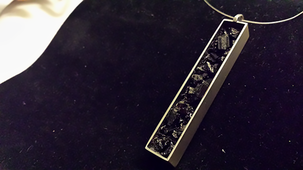
Bottomless Pit Pendant. Sterling Silver. Black Tourmaline Inlay.
-
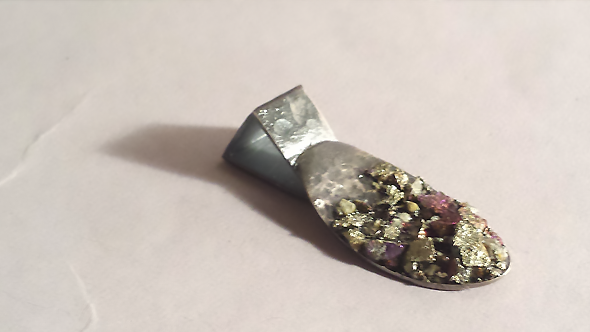
Boutiful Spoon Pendant. Sterling Silver. Hammer and Stamp Texture. Chalcopyrite Inlay.
- 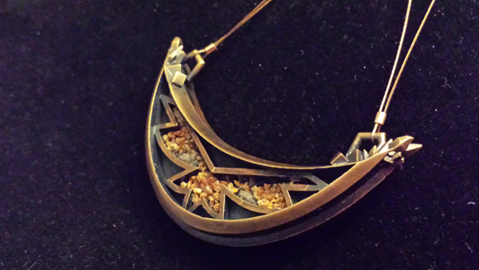
The Lofty Crescent Pendant. Lost Wax Casting: Ancient Bronze. Mimetite Inlay.- 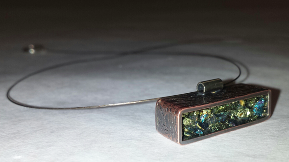
The Little Brick Pendant. Sterling Silver and Etched Copper. Chalcopyrite Inlay.- 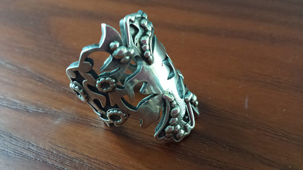
Around the Rosie Ring. Lost Wax Casting: Sterling Silver.- 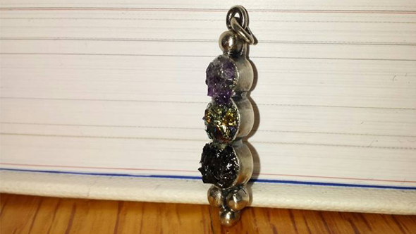
Third Eye Pendant. Sterling Silver. Amethyst, Chalcopyrite and Black Tourmaline Inlay.- 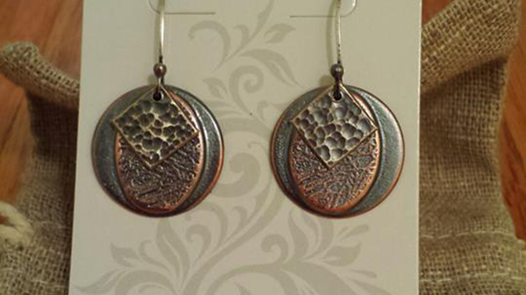
Your Momma's Favorite Earing. Hammered Sterling Silver and Etched Copper. - 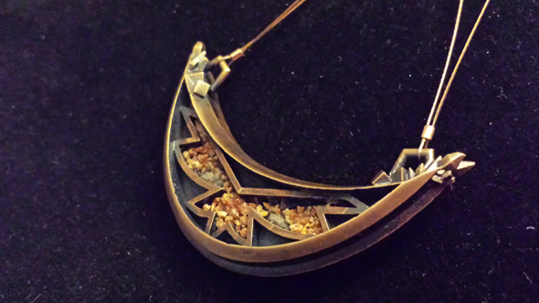